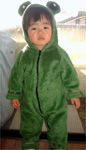
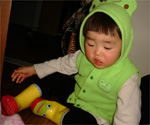
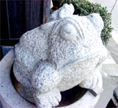
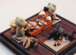
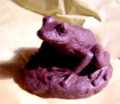
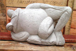

二足歩行？のカエル発見 【帝都発=たけぼう同志記者】カエラー歴10年ほどの若輩者です。 このたび投稿させていただきます。二足歩行？のカエル。。。。その実態は生まれたときからカエルに囲まれて育った我が息子の姿です。（というか自分はカエルの仲間だと思っている）歩いてるとまさしく「あっ！カエルが歩いてる！」見かけましたらぜひ声をかけてあげてくださいませ。 長靴にも注目！子供服はカエルものがたくさんあって嬉しいのです♪
 【全国かえる奉賛会】これこそ人類の来るべき姿なのであるーっ。子供の頃からカエル化教育を徹底していると、将来の幸福は約束されたようなものだ。生涯をカエルとして、ぴょんぴょん生きてゆくことができるので、たけぼうの子育てを手本に、子供はカエルとして育てよう。全身をカエル服に身を包んだ凛々しいお姿は、きっと幼稚園や小学校、中学から高校まで、ずっとずっとモテ続けるであろうぞ。にくいぞーっ！！もてもてカエル人生！ 今後も成長記録を待つ！８０歳のカエルじじいになるまで、ずっとカエル服きてほしいなー。レポートするために親もカエル万年まで長生きしましょう。
 熊川温泉に巨大石カエル！【熊本発すみちゃん同志記者】 熊本黒川温泉で見つけたカエルくんの写真を添付します。団子汁が美味しい「大福食堂」の入口に飾ってありました。入口で「もうかえれぇー！」って言いたいのでしょうか。なんちゃって。
【全国かえる奉賛会】おおー各地の温泉にカエルが出現しているようでうれしいぞーっ。カエルがもう、カエレーっというほどに居心地がよくて長居してしまうのが九州の温泉なのだああ。温泉に入ったら、無事にカエル。そして、再び熊川温泉に、来るってことよー。
 カエルが囲炉裏端で食事を！【帝都発カエル空挺隊同志記者】帝都の某所で行われる零細ガレージショップに出展販売される「かえる模型」の追加画像です。二人のカエルが向かい合って囲炉裏端で、ごはんを食べています。なんかいいでしょー
今年も本命チョコはカエル！ 【福岡発すみちゃん同志記者】今年の本命チョコは、かじかカエルにしました。喜んでくれた、と思う。。。＾＾【全国かえる奉賛会】本命用のカエルチョコが続々と生産されて、今年は真剣な愛の告白の場で、カエルチョコをもらって『やっったあああああ！』とお喜びしている男がやたらめったらと目立った２月１４日であった。 もらったチョコがカエルチョコ以外なやつは、全員義理だったので落胆するように。ちなみに大王も、もちろんカエルチョコ１をゲット。かじかカエルのチョコで、箱をあけると匂いたつようなチョコのカオリとともに、かじかカエルが可愛く登場してうれしかったなー。。。
しかし、可哀想なので食べれん。それが本命カエルチョコのただひとつの悩みなのである。
超巨大ごろ寝カエルを販売！ 【インドネシアバリ島発ばびぐりん同志記者】☆いしや ばびぐりん☆のW.Happyです。このほど日本上陸をしました新しいカエルをご紹介します。総勢50匹ほど入荷したのですが、その中でもhappyいちおしの「特大・寝っころガエル」です。今まで扱ってきたカエルの10倍はあろうかという体長：23×42×28cm、体重：19kgのでかさです。 他にも面白いカエルがいっぱい入りましたので、ぜひページにお出かけください。
かえる新聞からいらっしゃったお客様には、特典をつけます。 【全国かえる奉賛会】これはでかいーっ。カエル邸宅を建築する予定があるカエラーだけでなく、売れ行きが苦しいマンション建設業者は、速攻で購入して、入り口に設置すると、どんどんどんどん客がやってくるはずであるーっ。神社関係も狛犬とともに、ねころがり蛙を置いてみよう！！
投稿採用者に武功カエル徽章を授与！ |

かえる古新聞過去に取り上げた記事を見出し付きで一覧したい人は、ここをクリック◆創刊号を見る◆先週号を見る◆話題の号を見る◆かえる新聞の昔を読む
|
私も入っています。。全国かえる奉賛会
大王様に会うには、このバナーをクリック。ずっと奥に写真館があるぞ。全国かえる奉賛会に入会するには、自分のホームページのどこかに、下の部分を追加するとバナーがリンク付きで表示されるぞ。どんどん入会しましょー |


|